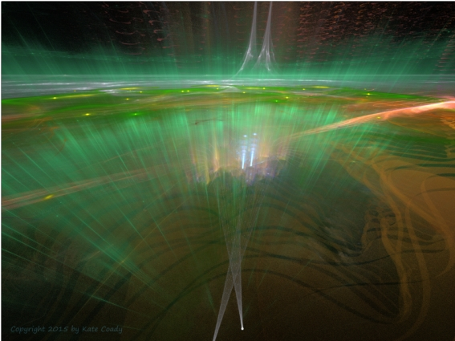

Heaven Sent (Part 3)
by
Gregg Marchese
"Of course." The Master spoke, not dismissive nor peremptory, but as if chastened herself at the simplicity of the deception.
"So it was our own expectations and eagerness that allowed the Influence to go undetected." Kionopses spoke in his usual flat tones, hands hidden in wide white sleeves of his robe, face impassive. But Dione knew he was relieved and intrigued by the news. The two Archons stood in the Master's private office attached to her personal quarters, just below the Chamber of Observation where the Great Spy Glass squatted in its coiled complexity. Kionopses had never been here, and concealed his mild surprise that one of the precious oculuses snaked its way even down here into a corner of the Master's office. A compact view table stood in the center of the room, edged with a dark wood brought up at great expense from the remnants of the Underground Fields.
The Master observed his glances—so difficult to hide anything from her—but chose to speak about the wood. "Salvage, or else I never would have ordered it. So much of the Fields have been abandoned, but resources still lie dormant there in the gloom."
She often hid double meanings in her words, the Foremost Foreteller knew. What was she trying to say here? "Perhaps similar to the Sibylline Book," he ventured. "We've gained important prophecies from it, yes, but if we can decontaminate the Book itself, we may salvage New Foretellings of even greater importance."
Dione walked casually to the oculus of the Great Spy Glass in one rounded corner of her office. "That," she said mildly, adjusting the focus while peering into the lens, "is the same thinking that allowed the Influence access." Still bent over with a hand on the tube, she looked back at him. "The Forces of the Night Land could not have been in the thoughts of the original authors; those prophecies come from a source we know not where, but it is pure." She stood up straight, keeping a hand on the tube, and spoke quickly before his brief intake of breath could become speech. "As is the source of the New Foretellings. No, the Book itself was tainted with some strange new dream-virus, invisible to our scanning instruments because it was dormant. It only became active when the Book was read, and only in the dreams of those who read it. Except the Scholars of course, who are immune."
Koniopses gave the briefest nod. Indeed he was partly relieved; it absolved the New Foretellers of responsibility for the fault, and reassured all that the virus was contained. But it meant the Book still could not be opened, and it did not clear the latest Foretellings of doubt. "I have read Mett's analysis," he said. "It does not mean that the Foretellings are false, only..." He chose the word with care. "Censured."
"I know what you need." The Master placed her eye to the oculus again and peered out into the Night Land. "New inspiration to redeem your limited visions, and gain new clarity. Either through an increased metering of Earth Current to your section—which you must know is not likely with the Power Proctors so parsimonious in these dire times, adding Current to the Air Clog—or a second exposure to the Book. But we cannot risk more such exposure unless the Reclamation Guild can purify the Book." She rotated the focus again. "You have monitored the Influence in the lowest city."
He knew what she implied. "The Reclamation Guild cannot now be trusted to lift the virus from the Book." His own tone, seemingly blank, carried just enough lilt that the Master, at her full Observing powers, could hear he implied it as a statement of her belief, not his own.
"Yes," she replied. "Even though our deepest scans detect no Malign Influence in the old man. Another dormant virus? I think not, but we cannot chance allowing the Reclaimers exposure to the Book with such doubt upon them—yet. But Influenced that old man is! You have your reports. Many others are listening. Some are observing." She stood back from the oculus and waved for him to look.
Koniopses paused long enough to display detachment, then glided sedately forward and bent to the tube. He looked in, and saw that the image was moving. A set sequence, he foresaw. The glass scanned along a stretch of Road Where the Silent Ones Walk; he saw its faintly gleaming black surface in a dim reddish light from beyond his view. As the image scanned along, he noticed some subtle features of rock and topography that told him the near side of the Road was the Place Where the Silent Ones Kill. So this was a West-facing view. Soon the scan moved into the Place of the Ab-humans, those mysterious beings that were seen to be part human and part monster, or part they knew not what. As the scan went swiftly along, passing by clumps of Ab-humans that cavorted around glimmering cauldrons beside the Road, or sat in strange circles on the ground, or danced in long spiraling lines, or seemed to sleep together in still clusters, the illumination that lit the scene became more tinted with green. That soft peaceful green light grew ever in his view, until he saw the Road, glistening with the strong green light, plunge into a brilliant green mist that swallowed all his sight, and left an impression in his mind of—
The Foremost looked up. In his characteristic flat voice, he said, "Home."
But the Master heard the question in his tone. She sat at her view table, smiling at him. "You know what the old Reclaimer has been preaching."
"We have our reports. Some of it is mystery. We have set our best Foretellers to discover the meanings behind his suggestions."
We believe the meanings are to be found not in the future, but the past.
The Foremost became instantly still, unresponding in any way the Master could detect—and through that she detected much. She knew Kionopses had identified the mind-speech as Nemia's, and suspected that the Scholar Potentate had formed an alliance with the Master. She knew the Foremost Foreteller would wonder why she had not told him that Nemia had been invited to attend this meeting. He might wonder if this was the Master's retaliation for his agreement with the Scholars to inform them first of any major Foretellings, before telling the Monstruwacans.
Dione gave him no time to confront her. She sent a mental invitation with her brain-elements, opening the door and allowing Nemia to enter. The Master stood and met the young Scholar's entrance with a brief but seemingly warm hug—let Kionopses ponder that—and sent, in a way both of her guests could hear, Welcome, Scholar Potentate. I am sure we both eagerly await your enlightened report on the Reclaimer's preachings. And Dione glanced at Kionopses's blank face and almost laughed.
The Foremost scarcely bowed—mostly with his eyelids—and waited.
Nemia, used to at least some vague emanations from the brain-elements of anyone she listened to, was intrigued to find a complete silence from the Foremost Foreteller.
Dione sent, Nemia has been doing some research at my request.
And I have found some fascinating references, Master. The Scholar flicked the black braids trailing down her chest behind her shoulders, and cast her voice aloud in lecture tone: "In collaboration with the Reclaimer's Guild, reconstituting crumbling documents from our archives, as well as recharging select abandoned view tables and sifting their records, I have found conjecture by many past Scholars on the phenomenon of the green luminous mist. Far off in the Western Night, past the Place of the Abhumans, at the end of the Road Where the Silent Ones Walk, they believed the green luminous mist might be a place of salvation. Beyond may await a place of light and plenty and warmth, of safety and peace. Some likened it to one of the most ancient beliefs: Heaven. We—"
We know. Kionopses was not about to listen to a scholarly lecture, and he did not find it rude to interrupt; holding forth was the rudeness. Ages ago, it was the Foretellings of one of our Order that brought the attention of the Scholars to that place. And now you claim conjecture as knowledge?
Nemia glanced at Dione, who was about to send a thought to them both, when Kionopses interrupted again. Where is Mett?
Nemia glanced again at the Master, and reading a look in her eye or a thought in her brain, sent, The Supreme Scholar is attending to his own studies of the old Reclaimer's sermons. But she sent a slightly different message to the Master, replacing attending with addicted.
The Foremost Foreteller seemed not to notice the discrepancy, but even the Master could not be sure. Our latest prophecies, the Foremost sent, tell that Mett shall go into the Night Land, among the first of these unPrepared peregrinations into the West. Though this Foretelling is not false, it is limited. The Foremost stared emptily into each of his listeners' eyes in turn. Then he stared directly at Nemia. New Foretellings show that you shall replace him as Supreme Scholar, though this too might be limited. Are you willing to jeopardize such an appointment with this thin ‘conjecture'?
He would have turned with customary poise and left then, but the Master's thought stopped him. These spites and in-fightings must pass, Kionopses. The lives and perhaps souls of many depend on our cooperation. We are the Archons, and though we are of different Orders, all the remaining peoples of the Redoubt are our charge.
He closed his eyes and nodded twice, the most dramatic gesture he had ever allowed the Master to see. I have seen more of these peregrinations in future desperate times, after the crushing of the Great Gate. People flee in mere cloth robes and slippers— Smoothly he turned, and leaving the mystery of his latest Foretelling, glided out of the room.
Nemia spoke aloud. "In his mind just then— His latest Foretelling has troubled him near to tears. And he does not know whether Mett has gone mad, or found some new hope."
The Master nodded as well. "Neither do I." And she placed her eye again to the oculus. "But he has certainly found a puzzle for that great brain of his to decipher."
The old man lived for some days in the embrasure, gazing out at the green glow and waiting. His followers brought him food and fresh bedding, water and questions. They brought him clean clothing and arguments, games to pass the long hours and doubts, soap and sponges for his bath, and their fears. To all this he acquiesced, as an old man might, saying nothing, and whenever he was free of their ministrations he stood at the opening of the embrasure and seemed to soak in the green glow like some ancients were said to have soaked up Sunshine.
One day he turned, and shuffling out of the embrasure into the corridor, began the long walk to the central plaza of the four hundred and eightieth city. Quickly the word spread, by brain-element and view table and aether and strident shout of the Sensitives in all the cities. When the old man arrived, the plaza and surrounding buildings were crammed with people, and great camera obscura had been erected, to project his words and image to all the view tables of the Pyramid.
A way was made for the old man to walk through the dense crowd, a seam that parted and closed behind him, conveying him to his plinth. Hands were offered to help him up to its height, and one of those hands was long and slender and fair as bone.
Then the old man turned to face the throng. His body straightened, his hands unclenched and reached out to embrace, his face smoothed/soothed all fears, and love looked out of his eyes.
"Our power grows. We know you have felt it. In the past, the green luminous mist was dull, but now you can see that it shines with new strength and hope. There is sanctuary across the Night Land, in the far West. The Road leads directly there! The Powers for Good have their source there, and we will send them forth to ward you as you go. They will ward all who take the Road, and strive toward the green luminous mist.
"For just as there are doors in the Night that have admitted Evil Influences and Dark Powers, so are there doors that allow the Good Powers entrance. The green luminous mist is the greatest of such doors. And not only does it allow Good Powers entrance, but good souls egress."
He got no further. A strident woman's voice shouted, "But we are frail! We cannot swing a diskos, nor bear the armour, no matter its lightness!"
The old man smiled on her where she stood in the midst of the crowd, and it was as if he blessed her alone. "You shall not need such trappings. Only the strength of trust. The Powers for Good shall be your arms and armour."
Another man, wearing the loose tunic and trousers of a Scholar researcher, called, "You have said you need us there. For what? How can we flawed humans bless such a place as the source of the Good Powers?" Doubt and skepticism soaked his every word.
From one of the balconies of the surrounding buildings, using a voice claxon, a Monstruwacan stepped forth from a group of his Order and shouted, "Yes, we have heard others calling from the Night, saying they need us, and we have only gone out to our doom!" Agreeing rumbles came from his group behind him, and spread through the crowd like the cracks of an earthquake through brittle stone.
At the base of the plinth, at the very feet of the old man, Mett allowed himself an inner smile. This was why he was the Supreme Scholar: He had deduced the identity of the Influence, while others still had not. He was not surprised to hear the old man's next words, in their sweet high tones, for he knew how to penetrate their vague truths to specifics.
The old man raised his limber hands and gestured as if cupping brain elements. "Remember: Of all you survey, only the Road was made by healthy human labor. It was laid by those who have gone on to a sanctuary you have thus far only dreamed of." He lowered his voice, but the near-whisper carried throughout the hushed space. "And they placed it there for you to follow."
A prolonged silence ensued, while people savored their own fears and misgivings. Then from that group of Monstruwacans, the deep and commanding voice of a Senior Monstruwacan spoke. "Perhaps. Back then. Now it is only The Road Where the Silent Ones Walk. We are certain to encounter Silent Ones if we walk it."
Wisely and calmly, the old man nodded. Only patience and understanding beamed from his face. "Let this be our reassurance: We shall make music issue from the House of Silence. If it touch your hearts, know that while this may seem an ensorcellment, it will be a kind one, sent mainly to reassure our children to seek a haven that needs your blessing. But also to free the Silent Ones from their own doom. For they are as we, only trapped in the Night Land.
"We know your instruments still work. Read their dials and see that this will not be a song of deceit and malignance. It will seem strange to you, but your instruments will tell you that the song is benign."
A babble of response broke out, loudest from that doubting cadre of Monstruwacans. "Music? From the House? What evil is this?"
"A Song Spell. We have been deceived by such before."
"Perhaps the instruments can be Influenced!"
To all this the old man responded, "When you hear music issue from the House of Silence, that never has let slip the merest whisper through the Eternity of your records, then you shall know that I speak truth. We grow strong, as our music through the House will prove, and no harm shall come to you on the Road." He crouched slightly and wrung his hands near his heart, face melting into an expression of pleading. "We need you here."
Conflicting tides surged through the crowds. Cries cut through the clamor, loudest from the group of Monstruwaccans: "What do you need of us?" "You need to eat souls!"
At that the old man was still and silent himself for a long beat, more still than any Foreteller. The crowds hushed slowly too.
"Listen for the song," he whispered, and strangely all heard him clearly. Placing his cupped hand to his ear, he turned his head slightly to listen out into the Night, far below and beyond the gray walls surrounding the distant reaches of the city. Then all the people became hushed, and listened too. They heard what they thought might be the distant growls of a pack of Night Hounds, or the rumbling of what might be the restless belly of the Pit of Red Smoke, or even the mingled shrill cackle and deep roar, as some described it, of the Great Laughter. Some shuddered, and some sobbed silently, and some felt a hot hatred arise in their hearts, but none made any noise.
And to all this the man responded not, but only held his hand to his ear and listened. Still holding thus, he stepped down from the plinth, and many hands reached out to help him. Mett lent his large slim hand, though he could see that the Influence still animated the old frame. Once the old man touched the metal plates of the plaza though, the Influence subsided, and the old man hunched, his limbs became stiff, his hand curled and fell from his ear. He shuffled through the path the crowd made for him, yet went not West this time, but North.
Toward the House of Silence.
© 2010 by Gregg Marchese.
Image © 2015 by Kate Coady.